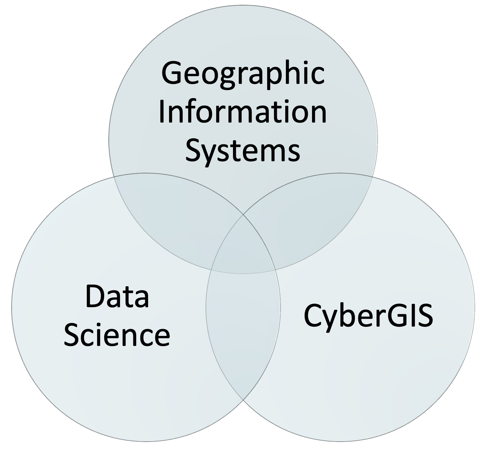

1 Introduction
In this section we introduce what Geographic Data Science is. We top it up with a few (optional) further readings for the interested and curious mind.
Slides can be downloaded “here”
From Geographic Data Science to Geographic Data Science
Geographic Information holds a pivotal position within our modern societies, permeating various aspects of our daily lives. It underpins essential sectors such as housing, transportation, insurance, banking, telecommunications, logistics, energy, retail, agriculture, healthcare, and urban planning. Its significance lies in the capacity to analyze and derive invaluable insights from geo-spatial data, enabling us to make informed decisions and address complex challenges. Proficiency in this field equips individuals with the ability to work with real-world data across multiple domains and tackle diverse problems. Furthermore, it provides the opportunity to acquire essential data science skills and utilize important tools for answering spatial questions. Given its wide-ranging applications and the increasing reliance on location-based information, there is a substantial demand for experts in the geographic information industry, making it a highly sought-after skill set in today’s workforce.
What information does GIS use?
- Data that defines geographical features like roads, rivers
- Soil types, land use, elevation
- Demographics, socioeconomic attributes
- Environmental, climate, air-quality
- Annotations that label features and places
Geographic Data Science
A GIS person typically produces cartographic and analytical products using desktop software. A geospatial data scientist creates code and runs pipelines that produce analytical products and cartographic representations.
This entails working with real-world data from various domains and tackling a wide range of complex problems. Through this process geospatial data science includes both data science and GIS tools that lead to the analysos of intricate spatial questions effectively. The synergy between CyberGIS and Geographic Data Science is unmistakable, with coding playing a pivotal role in enabling the seamless development of interactive data analysis. By leveraging cutting-edge technologies and innovative methodologies, this symbiotic relationship enhances the accessibility, scalability, and interactivity of geospatial data analysis. Consequently, it opens up new vistas for collaborative research and decision-making processes.
This multifaceted approach equips them with the knowledge and expertise to navigate the intricate world of spatial data analysis and contribute meaningfully to diverse fields where location-based insights are invaluable.

Open Source GIS
Open source Geographic Information Systems (GIS), such as QGIS, have made geographic analysis accessible worldwide. GIS programs tend to emphasize graphical user interfaces (GUIs), with the unintended consequence of discouraging reproducibility (although many can be used from the command line Python + QGIS). R and Python by contrast, emphasizes the command line interface (CLI).
The ‘geodata revolution’ drives demand for high performance computer hardware and efficient, scalable software to handle and extract signal from the noise, to understand and perhaps change the world. Spatial databases enable storage and generation of manageable subsets from the vast geographic data stores, making interfaces for gaining knowledge from them vital tools for the future.
R and Python are both tools with advanced modeling and visualization capabilities.
Open Science
Why do we care about the processes and tools we use when we do computational work? Where do the current paradigm come from? Are we on the verge of a new model? For all of this, we we have two reads to set the tone. Make sure to get those in first thing before moving on to the next bits.
First half of Chapter 1 in “Geographic Data Science with Python” Geographic Thinking for Data Scientists.
The 2018 Atlantic piece “The scientific paper is obsolete” on computational notebooks, by James Somers.
Modern Scientific Tools
Once we know a bit more about why we should care about the tools we use, let’s dig into those that will underpin much of this course. This part is interesting in itself, but will also valuable to better understand the practical aspects of the course. Again, we have two reads here to set the tone and complement the practical introduction we saw in the Hands-on and DIY parts of the previous block. We are closing the circle here:
- Second half of Chapter 1 in “Geographic Data Science with Python” Geographic Thinking for Data Scientists.
Further readings
Watch: Solving Life’s Everyday Problems with Data
“Doing Data Science” by Cathy O’Neil, Rachel Schutt in html or pdf is a general overview of why we needed Data Science and where if came from.
A slightly more technical historical perspective on where Data Science came from and where it might go can be found in David Donoho’s recent overview “50 years of Data Science”.
A geographic take on Data Science, proposing more interaction between Geography and Data Science is Alex Singelton’s and Dani Arribas-Bel’s Geographic Data Science article.